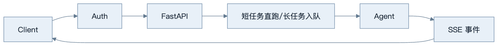
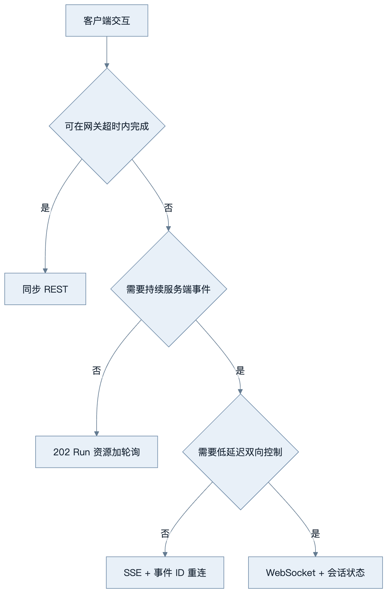
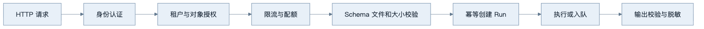
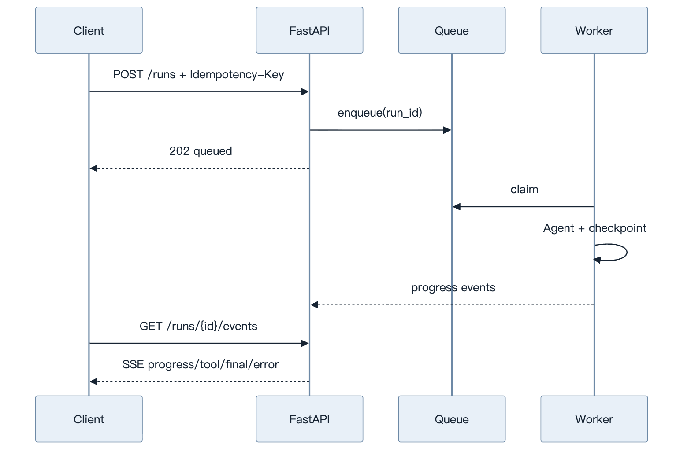

第24章：FastAPI 服务化
最后核对日期：2026-07-11。
导读、目标与前置知识
本章把 Agent 暴露为可认证、可取消、可观测的 API，覆盖 REST、模型、Streaming、SSE、WebSocket、依赖、鉴权、限流、上传、后台任务、OpenAPI 与测试。
学习目标是实现一个核心任务 API 示例，并解释每种实时协议的边界。前置知识为第23章。
架构与协议选择
Agent API 既要处理短请求，也要把长任务转成可观察资源。主图展示鉴权、任务分流和事件返回路径。

协议选择取决于交互方向和持久性，而不是“实时”两个字。SSE 适合单向事件，WebSocket 适合双向控制，轮询仍是可靠降级方案。

无论使用哪种协议，最终状态都写入 Run 资源；事件流只是状态变化的传输方式，不能成为唯一事实来源。

鉴权后仍需对象级授权，文件名与 MIME 仍不可信。内部异常映射成稳定错误模型，调用栈只保留在受控日志。
普通请求适合短任务；SSE 适合服务端单向事件；WebSocket 适合低延迟双向控制。流事件应有 event_id、类型、时间和数据，客户端可区分 token、tool、progress、done、error。
最小与完整工程
最小端点用 Pydantic 请求/响应和依赖注入。工程版加入 OAuth/API Key 主体、租户、请求 ID、限流、上传大小与格式验证、断连取消、幂等创建任务、OpenAPI 错误模型和 ASGI 测试。长任务不使用进程内 BackgroundTasks 代替持久队列。
误区、调试、实践与安全
不要在 async 路由中调用阻塞 SDK；不要把内部异常栈返回客户；不要信任文件名和 MIME。调试记录断连、首事件延迟和队列时间。鉴权之后仍需对象级授权。
总结、练习、面试与阅读
REST 资源与 Agent API
不要把模型的“聊天”直接当完整 API 设计。短任务可以 POST /runs 同步返回，长任务创建 Run 资源并返回 202；客户端通过 GET /runs/{id}、事件流和 POST /runs/{id}/cancel 管理生命周期。请求含 agent_id、input、幂等键和可选 session，响应含 run_id、status、output、usage、citations 与 error。

202 响应确认资源已创建而不是任务已完成。客户端可断线重连并依据 event_id 从持久事件继续读取。
请求、响应与依赖注入
FastAPI 用 Pydantic 模型验证边界，路由保持薄：鉴权依赖产生 Principal，Service 执行业务，Repository 访问存储。路由不直接构造模型客户端或数据库连接。
from typing import Annotated
from fastapi import Depends, FastAPI, status
from pydantic import BaseModel, Field
app = FastAPI()
class CreateRun(BaseModel):
agent_id: str
input: str = Field(min_length=1, max_length=20_000)
@app.post("/runs", status_code=status.HTTP_202_ACCEPTED)
async def create_run(
request: CreateRun,
principal: Annotated[Principal, Depends(current_principal)],
service: Annotated[RunService, Depends(run_service)],
) -> RunResponse:
return await service.create(principal, request)
示例中的 Principal/Service 是项目领域接口。对象级授权在 Service 中检查 agent、session 与租户，不因用户通过认证就允许访问所有 run。
Streaming、SSE 与 WebSocket
普通 StreamingResponse 适合字节流；SSE 适合服务器到浏览器的单向事件并具备事件类型/ID；WebSocket 适合语音、实时协作等频繁双向控制。文本 Token 只是事件之一，API 还应发送 run.started、tool.requested、approval.required、usage.updated、run.completed 和 run.failed。
SSE 每条事件包含递增 ID，客户端断线带 Last-Event-ID 恢复。事件存储有保留期，慢客户端采用背压或断开。模型最终输出通过业务验证后才发送 completed，不能把最后一个 token 当成功信号。
鉴权、限流与权限
认证可用 OAuth/OIDC、服务 token 或 API Key，具体取决于产品。认证产生主体，授权再检查 tenant、role、resource 与 action。限流按主体、租户、IP 和高成本能力组合，返回 Retry-After。模型预算还限制 Token、并发 run 和工具费用。
上传接口校验 Content-Length、流式实际大小、扩展名、MIME、魔数和压缩炸弹；文件先存隔离区并扫描，再进入解析队列。文件名不用于路径，使用生成 ID。
BackgroundTasks 与任务队列
FastAPI BackgroundTasks 在当前进程响应后运行，适合短小非关键动作，例如写辅助日志；进程重启会丢失，不能承载长 Agent。长任务写数据库状态并入持久队列，Worker checkpoint、retry 和取消。API 只是控制面。
OpenAPI、错误与版本
请求/响应和错误模型进入 OpenAPI，客户端不解析自然语言错误。统一 Problem Details 类结构包含 code、message、trace_id、retryable 和字段错误。模型内部异常不暴露 stack。破坏性 Schema 变化采用新 API 版本，新增可选字段也要测试旧客户端。
测试与调试
ASGITransport/TestClient 测路由，无需启动端口；Fake Service 验证 HTTP 契约。集成测试连接临时数据库与队列；SSE 测事件顺序、断线恢复、取消和失败结束。负载测试关注首事件、总时长、连接数和 Worker 饱和。
调试拆分网关排队、API 处理、队列等待、模型与工具 span。请求 ID 贯穿代理、API、Worker 和 Trace。断连后确认上游是否取消，否则用户离开但费用继续产生。
常见误区与安全注意事项
常见误区：用 WebSocket 表示“高级”、把长任务放 BackgroundTasks、只做路由鉴权、信任 MIME、返回内部异常。安全上设置 CORS allowlist、HTTPS、安全 header、请求大小、超时、限流和审计；OpenAPI 文档不应暴露内部管理接口给未授权网络。
总结：Agent API 的核心是任务状态与事件协议，不只是一个聊天端点。练习：实现可取消、可断线恢复的 SSE 任务。面试：SSE 与 WebSocket 如何选？BackgroundTasks 何时不可靠？认证与对象授权如何分层？延伸阅读：FastAPI、Starlette、OAuth/OIDC 和 SSE 规范。代码目录：projects/10-enterprise-platform/。
本章引用
以下资料用于支撑本章的核心原理、工程边界与版本敏感说明：